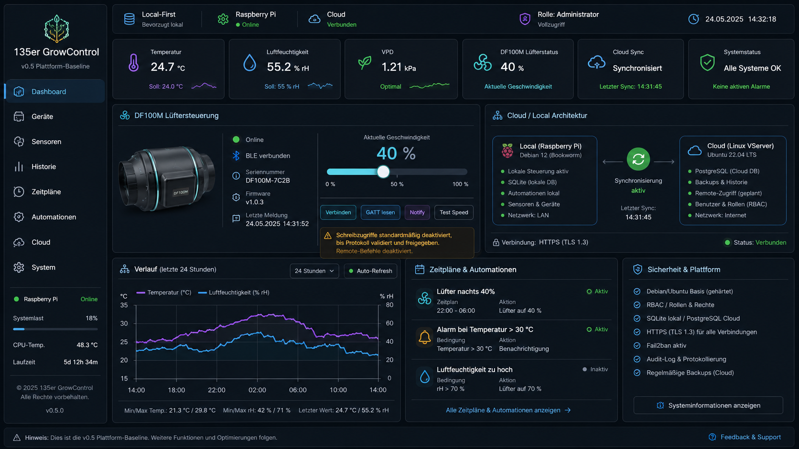

Local-first
Die lokale Steuerung bleibt auch ohne Internet verfügbar. Externe Dienste dürfen nie Single Point of Failure sein.
 135ER GROWCONTROLLOCAL CONTROL SYSTEM
WIP · v0.7
135ER GROWCONTROLLOCAL CONTROL SYSTEM
WIP · v0.7
135er GrowControl verbindet Klima, Geräte, Stromverbrauch und Automationen in einer lokalen Steuerzentrale. Der Raspberry Pi bleibt Master; Cloud und Smart-Home-Ökosysteme sind optionale Erweiterungen.
Futuristisch, aber funktional: wenige Ebenen, klare Zustände und keine dekorative Überladung.
Die lokale Steuerung bleibt auch ohne Internet verfügbar. Externe Dienste dürfen nie Single Point of Failure sein.
Temperatur, Luftfeuchte, VPD und weitere Messwerte werden in einer einheitlichen lokalen Oberfläche zusammengeführt.
Schaltzustand, Leistung und Energieverbrauch von Smart-Plugs inklusive frei definierbarer Kostenhochrechnung.
Shelly direkt; Home Assistant als optionale Brücke zu Tapo, FRITZ!SmartHome, Apple Home/Siri und weiteren Systemen.
Writes bleiben standardmäßig gesperrt und benötigen Inventory, Approval, Write Permission und Authentifizierung.
Die Architektur trennt lokale Kontrolle, optionale Integrationen und öffentliche Präsentation bewusst voneinander.
CONTROL_NODE Raspberry Pi LOCAL_API FastAPI LOCAL_DB SQLite DF100M experimental BLE SHELLY local JSON-RPC HOME_ASSISTANT optional REST bridge PUBLIC_WEBSITE static only REMOTE_WRITES deny by default PROJECT_STATE work in progress
Lesen und Anzeigen ist nicht dasselbe wie Steuern. Schreibzugriffe werden separat freigegeben und auditiert.
Die öffentliche Seite übernimmt Dunkelheit, Tiefe, feine Lichtlinien und technische Typografie aus der Ziel-GUI – bleibt aber bewusst ruhiger und rein statisch.

Architektur, Code, Sicherheitsgrenzen und experimentelle Bereiche bleiben transparent im Repository dokumentiert.